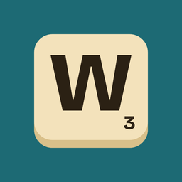

WörtlikAlmanca kelime oyunu · Android · ücretsiz
Almancayı oynayarak öğren
Wörtlik, Türkçe konuşanlar için Almanca kelime oyunu. Harflerinden Almanca kelimeler kur; oynadığın her kelimenin Türkçe anlamını, artikelini ve örnek cümlesini gör.
Google Play'den indir
Neler var?
- Kelime tahtası: bonus kareli tahtada, senin seviyende oynayan rakiplere karşı kelime kur. Oynanan her kelimenin anlamı, artikeli, çoğulu ve örnek cümlesi kartta görünür.
- Sıfırdan başla: hiç Almanca bilmiyorsan en sık 100 kelimeyi 5'er kelimelik kısa adımlarla öğren.
- Kısa oyunlar: cümle tamamla, artikel oyunu (der / die / das, kurallarıyla), birleşik kelimeler, günün bulmacası, düello ve kelime avı.
- Kelime kutuları ve tekrar: A1, A2, B1 ve “En önemli 100” kutuları; bilmediğin kelimeler defterine düşer ve unutmadan önce yeniden sorulur.
- Sözlük: 13.750 kelime; 13.500'ünde örnek cümle ve Türkçe çevirisi. Günlük dilde kullanılan kelimeler ayrıca işaretli. Anlamsız, eski ya da çok nadir kelimeler kabul edilmez.
- Almanca sesli okuma, günlük hedef, açık ve koyu tema.
- İnternet gerektirmez, reklam yok, kişisel veri toplanmaz.
Destek
Bir kelimenin anlamı yanlışsa oyundaki “Anlam yanlış mı?” düğmesini kullanabilir ya da efestudio.apps@gmail.com adresine yazabilirsin.
Gizlilik politikası · Kaynaklar ve lisanslar